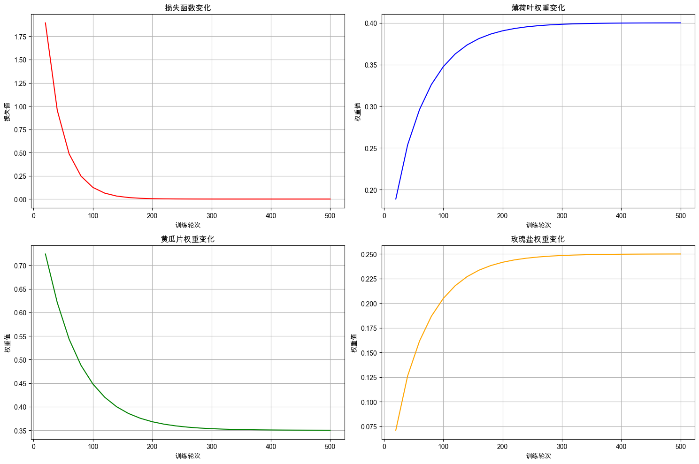
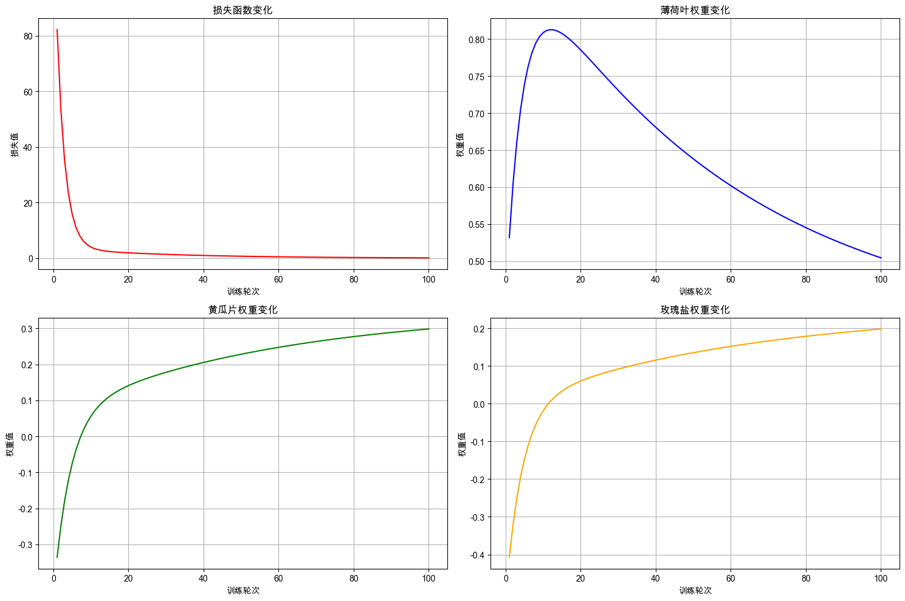
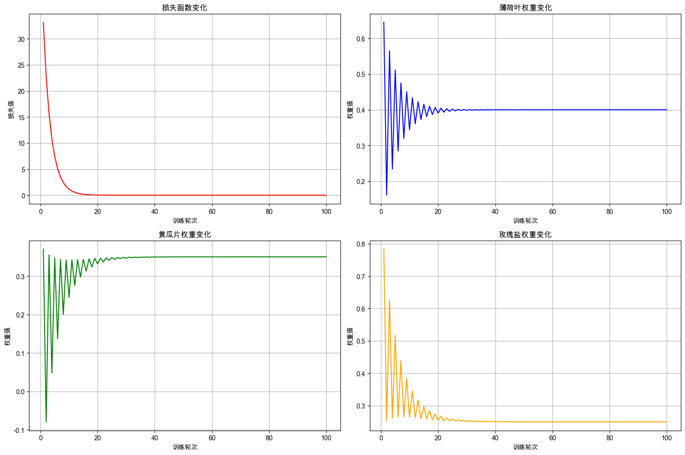
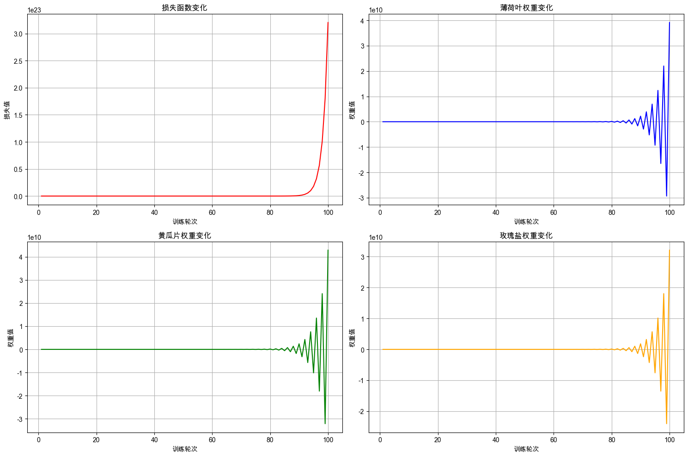

2. 神经网络启蒙：PyTorch 入门实战#
本章我们将正式迈入神经网络的大门，从零开始构建并训练你的第一个神经网络模型。通过本次任务，你将会了解神经网络模型的基本结构、训练流程，并掌握如何使用深度学习框架 PyTorch 快速搭建并进行训练一个多参数回归模型。
2.1. 任务背景#
你是一名程序员。自从上次与小美合作，成功教会机器人制作柠檬水后，你的无人柠檬水摊位生意渐火。看着账户里稳定增长的收入，一个更大胆的想法浮现出来：如果只卖经典原味柠檬水，市场天花板显而易见；但如果能让机器人学会开发多种口味的特调柠檬水，必将大大提升产品的吸引力和营收潜力。
你尝试在基础柠檬水中加入薄荷叶、百香果、黄瓜片或少许玫瑰盐，以创造不同的风味。薄荷带来清凉感，黄瓜增加清新的后韵，而一点点玫瑰盐则能神奇地提升整体的层次感——但这些配料之间会相互影响，如何平衡它们才是真正的艺术。
你不断尝试各种配比组合，邀请顾客品尝并记录评分，逐步优化配方。然而，这种试错过程漫长且成本高昂。于是你想：如果能训练一个模型，自动根据配料配比预测顾客评分，问题便可迎刃而解。
2.2. 最少必要知识#
神经网络概论
PyTorch 基础
2.3. 任务鸟瞰#
本次的任务是：训练一个模型，根据薄荷叶、百香果、黄瓜片和玫瑰盐的配比，预测顾客对柠檬水的评分。

预测一杯柠檬水的口感评分，看似简单，实则受到多种参数的复杂影响。薄荷叶的多少、黄瓜片的厚薄、玫瑰盐的用量……这些细微变量都在悄然塑造着最终的口感体验。面对如此纷繁的因素，我们难以通过手动方式去管理每一个参数，因为很难精确描述它们与口感评分之间的复杂关系。
此时，不妨观察人类如何对柠檬水进行评分，并尝试从生物神经元的机制中汲取灵感。
2.3.1. 神经网络#
在大脑中，神经元是信息处理的基本单元。一个神经元会接收外界的刺激信号，神经突触根据输入信号的重要性进行加权处理；当加权后的信号总和超过某个阈值时，神经元被激活，产生输出信号。
神经元工作过程可分为两步：
加权求和：对多个输入信号进行加权融合；
点火激活：若加权和超过阈值，则触发输出。
当我们品尝柠檬水并给出评分时，大脑中的神经元正在进行类似处理。味觉、嗅觉等感官接收到的特征信息（薄荷的清香、黄瓜的清爽、玫瑰盐的风味等）被传递至相关神经元，经过加权整合，最终形成对口感的综合评判，即评分。
我们可以将上述过程抽象为人工神经元模型。单个神经元的计算可表示为：输出 = 激活函数(Σ(权重 × 输入) + 偏置)。
计算的过程如下图所示：

其中：
\(x\)：输入信号
\(w\)：权重
\(b\)：偏置（可视为阈值）
\(∑\)：加权求和
\(σ\)：激活函数
\(y\)：输出信号
更进一步，我们可以将神经元结构表示为数学公式： \(y = σ(w_1x_1 + w_2x_2 + w_3x_3 + ... + w_nx_n + b)\)
2.3.2. 模型结构#
由大量神经元相互连接形成的系统称为神经网络（Neural Network）。本次任务我们使用神经网络，构建一个用于预测柠檬水评分的模型，学习三种配料与评分之间的关系。其模型结构如下：

本次的任务也是一个简单的多参数回归模型，所以我们只它使用一个神经网络层构建模型即可，这个神经网络层有3个输入和1个输出。
开发神经网络模型和机器学习模型一样，通常也遵循以下四个步骤：数据准备、模型定义、模型训练与模型评估。下文将依此流程组织内容。在开始之前，我们先配置环境，避免因为环境不同而导致程序不能复现。
2.4. 环境配置#
2.4.1. 安装依赖#
!pip install --upgrade dsxllm -i https://pypi.org/simple
2.4.2. 环境版本#
from dsxllm.util import show_version
show_version()
本书愿景：
+------+--------------------------------------------------------+
| Info | 《动手学大语言模型》 |
+------+--------------------------------------------------------+
| 作者 | 吾辈亦有感 |
| 哔站 | https://space.bilibili.com/3546632320715420 |
| 定位 | 基于'从零构建'的理念，用实战帮助程序员快速入门大模型。 |
| 愿景 | 若让你的AI学习之路走的更容易一点，我将倍感荣幸！祝好😄 |
+------+--------------------------------------------------------+
环境信息：
+-------------+--------------+------------------------+
| Python 版本 | PyTorch 版本 | PyTorch Lightning 版本 |
+-------------+--------------+------------------------+
| 3.12.12 | 2.10.0 | 2.6.1 |
+-------------+--------------+------------------------+
2.5. 数据准备#
2.5.1. 数据集下载#
2.5.2. 观察数据#
加载并预览数据集前5行，了解数据结构。
# 读取数据
import pandas as pd
# 读取训练集数据
train_data_frame = pd.read_csv('./dataset/craft_lemonade_train.csv')
train_data_frame[:5]
| 薄荷叶 | 黄瓜片 | 玫瑰盐 | 顾客评分 | |
|---|---|---|---|---|
| 0 | 9 | 10 | 6 | 8.60 |
| 1 | 10 | 9 | 7 | 8.90 |
| 2 | 5 | 3 | 7 | 4.80 |
| 3 | 3 | 4 | 6 | 4.10 |
| 4 | 4 | 9 | 2 | 5.25 |
从输出结果可以看到数据包含四个字段：薄荷叶、黄瓜片、玫瑰盐（输入特征）和 顾客评分（目标值）。我们需要将每一条训练数据转化成 <输入特征, 目标值> 数据对的形式。
2.5.3. 定义数据加载方法#
根据文件路径加载 csv 数据，分离出输入特征与对应的目标值标签。
def load_data(file_path):
# 读取 csv 数据
data_frame = pd.read_csv(file_path)
# 将DataFrame数据转换为列表格式
features = data_frame[['薄荷叶', '黄瓜片', '玫瑰盐']].values.tolist()
target_scores = data_frame[['顾客评分']].values.tolist()
return features, target_scores
2.5.4. 加载训练集和评估集#
加载训练数据和评估数据，并打印训练集和评估集的样本数量，确认数据加载成功。
train_features, train_targets = load_data('./dataset/craft_lemonade_train.csv')
val_features, val_targets = load_data('./dataset/craft_lemonade_val.csv')
print(f"训练数据集样本数量：{len(train_features)}")
print(f"评估数据集样本数量：{len(val_features)}")
训练数据集样本数量：800
评估数据集样本数量：200
2.6. 模型定义#
2.6.1. PyTorch 核心概念#
要构建并训练一个神经网络模型，离不开强大的深度学习框架。PyTorch 以其灵活性、Python 友好的设计而广受欢迎，它提供了直观的接口来构建和调试复杂神经网络，是目前入门人工智能的主流选择之一。
为了顺利搭建柠檬水评分预测模型，我们需要了解以下 PyTorch 的核心概念：
概念 |
说明 |
|---|---|
张量（Tensor） |
PyTorch 中数据的基本单元，配料配比、评分等参数都需转换为张量。 |
网络层（Layer） |
模型处理数据的基本模块，需明确其输入输出维度。 |
模型（Model） |
多个网络层的有序堆叠，形成完整的神经网络模型。 |
Pytorch详细教程可参考：https://www.runoob.com/pytorch/pytorch-basic.html
2.6.2. 柠檬水评分预测模型的模型结构#
本次任务我们使用 PyTorch 训练一个预测 3 种配料与顾客评分之间关系的神经网络模型。
回顾一下模型结构：
2.6.3. 柠檬水评分预测模型的代码实现#
定义一个继承自 nn.Module 的柠檬水评分模型类 LemonadeRatingModel，这是 PyTorch 中定义神经网络模型的标准方式。
import torch
import torch.nn as nn
# 定义柠檬水评分预测模型,继承自 nn.Module，这是PyTorch中定义神经网络的标准方式
class LemonadeRatingModel(nn.Module):
def __init__(self):
super(LemonadeRatingModel, self).__init__()
# 创建一个线性层：接受3个输入特征（薄荷叶、黄瓜片、玫瑰盐）并输出1个值（顾客评分）
self.rating_predictor_layer = nn.Linear(in_features=3, out_features=1, bias=False)
def forward(self, input_features):
# 前向计算，定义数据在网络中的流动方式，预测顾客评分，forward 方法会被自动调用
predicted_rating = self.rating_predictor_layer(input_features)
return predicted_rating
自定义模型时， 需要重写模型的__init__和forward方法，分别完成模型的初始化和前向计算。
__init__()：定义模型的参数和层结构，创建一个拥有 3 个输入特征，1 个输出特征的线性层（Linear）。forward()：定义数据在网络中的流动方式，通过前向计算根据输入特征预测顾客评分。
线性层
在 PyTorch 中，线性层（Linear Layer）是最基础、最常用的神经网络层之一，由于它的每一个神经元都接收来自上一层所有神经元的输入信号，并与每个输入都有一个独立的权重进行连接，所以也称它为“全连接层”。
在PyTorch中，线性层由 torch.nn.Linear 类实现。它的主要参数有：
in_features：输入特征的数量（即输入的维度）out_features：输出特征的数量（即输出的维度）bias：布尔值，表示是否使用偏置项，默认为True
当创建一个 Linear 实例时，它会自动初始化权重和偏置。
2.6.4. 柠檬水评分预测模型的结构详情#
创建一个模型实例，并打印模型结构，确认模型创建成功。
from dsxllm.util import print_red
# 创建模型实例
model = LemonadeRatingModel()
print_red("模型结构：")
print(model)
模型结构：
LemonadeRatingModel(
(rating_predictor_layer): Linear(in_features=3, out_features=1, bias=False)
)
从运行结果可以看到，柠檬水评分模型中只有一个预测评分的线性层 rating_predictor_layer，它有 3 个输入（薄荷叶、黄瓜片、玫瑰盐）、1 个输出（顾客评分）。
2.7. 模型训练#
2.7.1. 神经网络的训练#
既然生物神经网络能产生智能，那么仿照其结构构建的人工神经网络也应具备某种“学习能力”。神经网络的“学习”是指从训练数据中自动获取最优权重参数的过程。神经网络学习思路极其简单：计算神经网络得出的预测值与正解的误差，根据误差更新神经网络的权重，最终使得模型的误差总和达到最小。
使用 PyTorch 训练神经网络模型的流程如下：

训练神经网络模型和机器学习的流程基本一致，但也稍有不同：
初始化模型：确定模型结构，并对模型参数进行随机初始化。
前向传播：通过
forward()将输入数据输入模型，得到预测结果。损失计算：使用损失函数
loss_fn()计算模型预测结果与真实结果之间的误差，评估模型性能。梯度计算：由于神经网络的参数成千上万，无法再手动计算每一个参数的更新方式，利用反向传播算法
backward()自动计算损失对各参数的梯度，指导参数更新方向。参数更新：同样由于参数规模的暴增，手动更新参数也不太可能。另外学习率调度也非常复杂，需要借助优化器
optimizer更新模型参数。重复执行 2～5 步，通过持续训练逐步优化模型，最终得到使损失最小化的模型参数。
每完成一次在数据集上的训练循环，我们称之为一个轮次，也就是 epoch。下面我们定义一个训练方法开始训练顾客评分模型。
2.7.2. 定义训练方法#
PyTorch 经典的训练循环如图所示：

下面定义训练神经网络模型的方法 train_model，指定训练轮次并在每一轮中执行完整的训练循环。同时，需定期记录训练过程中损失值，以便追踪模型训练的进度。
def train_model(model, train_features, train_targets, loss_fn, optimizer, num_epochs=100, log_interval=5):
"""
训练模型并记录训练日志
参数:
model: 要训练的模型
train_features: 训练特征数据张量
train_targets: 训练标签数据张量
loss_fn: 损失函数
optimizer: 优化器
num_epochs: 训练轮数，默认为100
log_interval: 日志记录间隔，默认为5
返回:
training_logs: 包含训练过程记录的列表
"""
training_logs = []
for epoch in range(num_epochs):
# 1. 前向传播：使用模型预测评分
predictions = model(train_features)
# 2. 计算损失：使用损失函数计算预测评分与真实分数的差距
loss = loss_fn(predictions, train_targets)
# 3. 清空梯度：将模型参数的梯度清空，避免梯度累积
optimizer.zero_grad()
# 4. 反向传播，计算梯度
loss.backward()
# 5. 使用优化器，更新参数
optimizer.step()
# 记录训练日志
if (epoch + 1) % log_interval == 0:
# 记录模型参数
with torch.no_grad():
for param_name, param in model.named_parameters():
if param.requires_grad: # 筛选需要计算计算梯度进行更新的参数
weights_list = param.data.numpy()[0].tolist()
# 获取模型权重
mint_leaf_weight, cucumber_slice_weight, rose_salt_weight = weights_list[0], weights_list[1], weights_list[2]
# 记录训练日志
training_logs.append({
"Epoch": epoch + 1,
"Loss": loss.item(),
"薄荷叶权重": mint_leaf_weight,
"黄瓜片权重": cucumber_slice_weight,
"玫瑰盐权重": rose_salt_weight
})
return training_logs
在神经网络模型的训练循环中，每个训练循环通常包含以下核心操作：
前向传播：通过
model()自动执行前向传播计算，模型会基于输入特征（如薄荷叶、黄瓜片、玫瑰盐的用量）计算预测输出（例如顾客评分）。损失计算：调用
loss_fn()利用损失函数量化模型预测值与真实标签之间的差异，反映当前预测的误差大小。清空历史梯度：执行
optimizer.zero_grad()将优化器中之前累积的梯度清零，以避免梯度累加影响本轮参数更新。反向传播：通过
loss.backward()系统会自动计算损失对模型各参数的梯度，从而确定参数调整的方向与幅度。参数更新：使用
optimizer.step()优化器将根据计算得到的梯度更新模型参数，使模型预测逐步向真实值靠近。
这些步骤在训练过程中循环执行，直至训练结束。
2.7.3. 训练模型#
定义好了训练方法后，可以开始训练模型了。训练模型需要以下步骤：
超参数配置：定义训练轮数、日志记录间隔、学习率等超参数
准备训练数据：将训练的输入数据和标签数据转换为张量
初始化模型训练组件：创建模型实例、损失函数和优化器
损失函数：因为此任务为回归任务，使用均方误差损失函数（MSE）
优化器：使用随机梯度下降（SGD）优化器优化模型参数，学习率为
0.001
执行训练循环：调用
train_model函数进行500轮训练，每20轮记录一次训练日志。
损失函数：均方误差（MSE）
MSE 是 均方误差 的缩写，英文全称是 Mean Squared Error。它是评估预测模型（如回归模型）精度最常用、最重要的指标之一。MSE 衡量的是模型预测值与真实值之间差异（即误差）的平方的平均值。
简单来说：
先算出每一个预测值和对应的真实值差多少。
把这个差值平方（目的是消除正负号的影响，并放大较大误差）。
把所有样本的“平方误差”求平均。
你可以把 MSE 理解为“平均平方误差”。数值越小，说明模型的预测值（拟合值）与真实值越接近，模型越好。
优化器：随机梯度下降（SGD）
SGD 是 随机梯度下降 的缩写，英文全称是 Stochastic Gradient Descent。它是一种用于优化机器学习模型参数的核心算法，目的是找到使模型损失函数最小化的参数值。
我们打一个比方，可以帮助你更好的理解 SGD 的工作原理：
有一个性情古怪的探险家。他在广袤的干旱地带旅行，坚持寻找幽深的山谷。他的目标是要到达最深的谷底（他称之为“至深之地”）。这也是他旅行的目的。并且，他给自己制定了两个严格的“规定”：一个是不看地图；另一个是把眼睛蒙上。因此，他并不知道最深的谷底在这个广袤的大地的何处，而且什么也看不见。在这么严苛的条件下，这位探险家如何前往“至深之地”呢？他要如何迈步，才能迅速找到“至深之地”呢？
寻找最优参数时，我们所处的状况和这位探险家一样，是一个漆黑的世界。我们必须在没有地图、不能睁眼的情况下，在广袤、复杂的地形中寻找“至深之地”。大家可以想象这是一个多么难的问题。
在这么困难的状况下，地面的坡度显得尤为重要。探险家虽然看不到周围的情况，但是能够知道当前所在位置的坡度（通过脚底感受地面的倾斜状况）。于是，朝着当前所在位置的坡度最大的方向前进，就是SGD的策略。勇敢的探险家心里可能想着只要重复这一策略，总有一天可以到达“至深之地”。
from dsxllm.util import to_dataframe
# 1️⃣ 超参数配置
num_epochs=500
log_interval=20
learning_rate = 0.001
# 2️⃣ 准备训练数据：将原始特征和目标值数组转换为 PyTorch 张量格式，指定数据类型为float32
train_features_tensor = torch.tensor(train_features, dtype=torch.float32)
train_targets_tensor = torch.tensor(train_targets, dtype=torch.float32)
# 3️⃣ 初始化模型训练组件：创建模型实例、损失函数和优化器
model = LemonadeRatingModel() # 创建模型实例
loss_fn = nn.MSELoss() # 使用均方误差损失函数
optimizer = torch.optim.SGD(model.parameters(), lr=learning_rate) # 使用随机梯度下降优化器
# 4️⃣ 执行训练循环：调用训练方法进行500轮训练
training_logs = train_model(model, train_features_tensor, train_targets_tensor, loss_fn, optimizer, num_epochs=num_epochs, log_interval=log_interval)
# 5️⃣ 训练过程监控：以表格形式展示训练过程中的关键指标变化
print_red("模型训练日志：")
df = to_dataframe(training_logs)
display(df)
模型训练日志：
| Epoch | Loss | 薄荷叶权重 | 黄瓜片权重 | 玫瑰盐权重 | |
|---|---|---|---|---|---|
| 0 | 20 | 1.8945 | 0.1887 | 0.7240 | 0.0711 |
| 1 | 40 | 0.9545 | 0.2538 | 0.6208 | 0.1263 |
| 2 | 60 | 0.4852 | 0.2960 | 0.5431 | 0.1616 |
| 3 | 80 | 0.2466 | 0.3260 | 0.4877 | 0.1868 |
| 4 | 100 | 0.1254 | 0.3474 | 0.4482 | 0.2048 |
| 5 | 120 | 0.0637 | 0.3626 | 0.4200 | 0.2177 |
| 6 | 140 | 0.0324 | 0.3734 | 0.3999 | 0.2269 |
| 7 | 160 | 0.0165 | 0.3811 | 0.3856 | 0.2335 |
| 8 | 180 | 0.0084 | 0.3865 | 0.3754 | 0.2382 |
| 9 | 200 | 0.0043 | 0.3904 | 0.3681 | 0.2415 |
| 10 | 220 | 0.0022 | 0.3932 | 0.3629 | 0.2440 |
| 11 | 240 | 0.0011 | 0.3952 | 0.3592 | 0.2457 |
| 12 | 260 | 0.0006 | 0.3966 | 0.3566 | 0.2469 |
| 13 | 280 | 0.0003 | 0.3976 | 0.3547 | 0.2478 |
| 14 | 300 | 0.0001 | 0.3983 | 0.3533 | 0.2484 |
| 15 | 320 | 0.0001 | 0.3988 | 0.3524 | 0.2489 |
| 16 | 340 | 0.0000 | 0.3991 | 0.3517 | 0.2492 |
| 17 | 360 | 0.0000 | 0.3994 | 0.3512 | 0.2494 |
| 18 | 380 | 0.0000 | 0.3996 | 0.3509 | 0.2496 |
| 19 | 400 | 0.0000 | 0.3997 | 0.3506 | 0.2497 |
| 20 | 420 | 0.0000 | 0.3998 | 0.3504 | 0.2498 |
| 21 | 440 | 0.0000 | 0.3998 | 0.3503 | 0.2498 |
| 22 | 460 | 0.0000 | 0.3999 | 0.3502 | 0.2499 |
| 23 | 480 | 0.0000 | 0.3999 | 0.3502 | 0.2499 |
| 24 | 500 | 0.0000 | 0.3999 | 0.3501 | 0.2499 |
从训练日志中可以看出随着训练的进行，损失值不断下降，逐步降至接近 0，表示模型预测准确性不断提高。
2.7.4. 训练过程可视化#
绘制训练过程中损失值和重要权重的变化曲线，更直观地观察损失值和各参数权重在训练过程中的变化趋势。
from dsxllm.util import plot_training_curves
# 绘制训练日志图像
plot_training_curves(training_logs)

从训练的过程中我们可以看到，所有参数在约 200 轮后基本收敛，三个配料权重都趋于稳定，说明模型确实找到了它们的配比与顾客评分之间的关系。而且总体来看，变化的趋势很平滑，说明模型训练过程非常稳定。
2.8. 模型评估#
模型训练完成后，需要评估模型在未见过的新数据上的表现，即评估模型的泛化能力。具体步骤如下：
评估时，使用
torch.no_grad()关闭梯度计算，可以在推理过程中不存储中间结果，减少显存占用将评估数据转换为 Pytorch 张量
使用训练好的模型对新的柠檬水进行评分
计算预测评分和真实评分的偏差和精度
# 模型评估
# 1️⃣ 关闭梯度计算
with torch.no_grad():
# 2️⃣ 将输入特征转换为张量格式
val_features_tensor = torch.tensor(val_features, dtype=torch.float32)
# 3️⃣ 使用训练好的模型对柠檬水进行评分
predicted = model(val_features_tensor).numpy()
# 4️⃣ 计算预测评分和真实评分的偏差和精度
data = []
for i in range(len(val_features)):
residual = predicted[i][0] - val_targets[i][0] # 预测的偏差
accuracy_ratio = 1 - abs(residual) / val_targets[i][0] # 预测的精度
data.append({
"薄荷叶": val_features[i][0],
"黄瓜片": val_features[i][1],
"玫瑰盐": val_features[i][2],
"真实评分": val_targets[i][0],
"模型预测": predicted[i][0],
"模型偏差": f"{residual:.4f}",
"模型精度": f"{accuracy_ratio * 100:.2f}%"
})
df = to_dataframe(data)
display(df)
| 薄荷叶 | 黄瓜片 | 玫瑰盐 | 真实评分 | 模型预测 | 模型偏差 | 模型精度 | |
|---|---|---|---|---|---|---|---|
| 0 | 1 | 8 | 2 | 3.7000 | 3.7007 | 0.0007 | 99.98% |
| 1 | 1 | 2 | 3 | 1.8500 | 1.8500 | 0.0000 | 100.00% |
| 2 | 9 | 8 | 3 | 7.1500 | 7.1502 | 0.0002 | 100.00% |
| 3 | 1 | 10 | 9 | 6.1500 | 6.1506 | 0.0006 | 99.99% |
| 4 | 1 | 3 | 9 | 3.7000 | 3.6998 | -0.0002 | 99.99% |
| ... | ... | ... | ... | ... | ... | ... | ... |
| 195 | 9 | 1 | 2 | 4.4500 | 4.4495 | -0.0005 | 99.99% |
| 196 | 10 | 4 | 6 | 6.9000 | 6.8995 | -0.0005 | 99.99% |
| 197 | 9 | 5 | 6 | 6.8500 | 6.8497 | -0.0003 | 100.00% |
| 198 | 4 | 7 | 3 | 4.8000 | 4.8004 | 0.0004 | 99.99% |
| 199 | 4 | 2 | 9 | 4.5500 | 4.5495 | -0.0005 | 99.99% |
200 rows × 7 columns
从评估结果中可以看出，模型在预测柠檬水评分时，基本保持了预测的偏差在 ±0.01 的范围内，准确率也基本保持在 99.99% 以上。说明我们的模型成功学习到了薄荷叶、黄瓜片、玫瑰盐与顾客评分之间的关系，并且在验证集上的表现良好，说明训练出的模型具有较好的泛化能力，完美的完成了本次的任务。
2.9. 为什么模型总是训不好？#
虽然我们已经完美的完成了本次任务，但是很多同学在刚开始手动训练模型时，常常会遇到训练失败的情况。在前面的训练过程中，我们可以看到和模型训练相关的因素主要有两个：训练数据量和学习率。
下面我们设计3个实验，对比不同数据量和学习率对训练结果的影响：
实验 |
实验设置 |
|---|---|
实验 1 |
样本数多，学习率低 |
实验 2 |
样本数多，学习率高 |
实验 3 |
样本数少，学习率高 |
2.9.1. 实验1：样本数多，学习率低#
训练轮数：
100样本数：
800学习率：
0.001
# 1️⃣ 超参数配置
num_epochs = 100
samples_num = 800
lr = 0.001
# 2️⃣ 将数组转换为 PyTorch 张量
train_features_tensor = torch.tensor(train_features[:samples_num], dtype=torch.float32)
train_targets_tensor = torch.tensor(train_targets[:samples_num], dtype=torch.float32)
# 3️⃣ 定义损失函数和优化器
model = LemonadeRatingModel() # 创建模型实例
loss_fn = nn.MSELoss() # 使用均方误差损失函数
optimizer = torch.optim.SGD(model.parameters(), lr=lr) # 使用随机梯度下降优化器
# 4️⃣ 调用训练方法
training_logs = train_model(model, train_features_tensor, train_targets_tensor, loss_fn, optimizer, num_epochs=num_epochs, log_interval=1)
# 5️⃣ 可视化训练过程
plot_training_curves(training_logs)

从 实验1 中，我们可以看到，损失下降速度较慢但稳定，训练过程平滑，没有有剧烈波动。
2.9.2. 实验2：样本数多，学习率高#
训练轮数：
100样本数：
800学习率：
0.009
# 1️⃣ 超参数配置
num_epochs = 100
samples_num = 800
lr = 0.009
# 2️⃣ 将数组转换为 PyTorch 张量
train_features_tensor = torch.tensor(train_features[:samples_num], dtype=torch.float32)
train_targets_tensor = torch.tensor(train_targets[:samples_num], dtype=torch.float32)
# 3️⃣ 定义损失函数和优化器
model = LemonadeRatingModel() # 创建模型实例
loss_fn = nn.MSELoss() # 使用均方误差损失函数
optimizer = torch.optim.SGD(model.parameters(), lr=lr) # 使用随机梯度下降优化器
# 4️⃣ 调用训练方法
training_logs = train_model(model, train_features_tensor, train_targets_tensor, loss_fn, optimizer, num_epochs=num_epochs, log_interval=1)
# 5️⃣ 可视化训练过程
plot_training_curves(training_logs)

从 实验2 中，我们可以看到，当学习率增大时，损失下降速度较快，在第 20 轮权重的值就接近最优值了。虽然增大学习率能加快模型的训练速度，但训练的过程存在剧烈波动，训练过程不平滑，有较大的风险训练失败。
2.9.3. 实验3：样本数少，学习率高#
训练轮数：
100样本数：
5学习率：
0.009
# 1️⃣ 超参数配置
num_epochs = 100
samples_num = 5
lr = 0.009
# 2️⃣ 将数组转换为 PyTorch 张量
train_features_tensor = torch.tensor(train_features[:samples_num], dtype=torch.float32)
train_targets_tensor = torch.tensor(train_targets[:samples_num], dtype=torch.float32)
# 3️⃣ 定义损失函数和优化器
model = LemonadeRatingModel() # 创建模型实例
loss_fn = nn.MSELoss() # 使用均方误差损失函数
optimizer = torch.optim.SGD(model.parameters(), lr=lr) # 使用随机梯度下降优化器
# 4️⃣ 调用训练方法
training_logs = train_model(model, train_features_tensor, train_targets_tensor, loss_fn, optimizer, num_epochs=num_epochs, log_interval=1)
# 5️⃣ 可视化训练过程
plot_training_curves(training_logs)

从结果中我们可以看到 实验3 训练彻底失败。和 实验2 相比，它只训练了 5 个样本，训练数据过少导致训练失败。这说明：“数据就是智能的燃料”，就像一个火箭就算有再强的引擎，如果没有足够的燃料也无法到达期望的目的地。
这是本实验的关键教训：
当数据量不足时，模型无法学习到真正的规律。
越是复杂的模型训练所需的数据量越大。
2.9.4. 实验的启示#
通过这三组对比实验，我们系统分析了不同样本量与学习率的组合对模型训练的影响，具体实验设置及结果如下：
实验1：采用多样本量、低学习率设置 → 训练过程稳定，但收敛速度缓慢；实验2：采用多样本量、高学习率设置 → 训练收敛速度加快，但过程波动剧烈；实验3：采用少样本量、高学习率设置 → 训练直接失败。
上述三组实验结果为我们提供了一些关键启示：
首先，学习率对训练效果存在双重影响，需精准平衡。
过小的学习率会显著延长训练周期，会降低训练效率，浪费大量的时间和算力成本；
提升学习率虽能有效加速训练收敛，但会破坏训练稳定性，甚至可能导致训练失效。
因此，好的学习率调度策略对模型的训练至关重要。在后续项目中，我们会采用更先进的优化器动态调度学习率，让模型在训练过程又快又好。
其次，数据对模型训练效果具有根本性决定作用。 数据量不足或质量欠佳，会直接导致训练失败。不少 AI 项目失败的原因，都在于对高质量数据采集的重视不足，反而过度将资源倾斜于模型开发与改进。事实上，数据采集的优先级应高于模型本身，其质量与数量直接决定项目成败，是 AI 项目实施过程中的至关重要的环节。
2.10. 本章小结#
本章使用 PyTorch 训练了我们的第一个神经网络模型。我们掌握了如何使用 PyTorch 训练一个多参数的回归模型，并理解了神经网络模型的构建、训练过程以及损失函数和优化器的作用。这为理解深度学习框架的工作机制奠定了坚实基础。但是，在训练过程中，我们的数据还是比较低效的手动管理，在下一个章节中我们将学习如何使用更深的网络、更高效的数据管理方式处理更复杂的多分类问题。